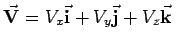
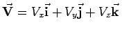
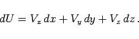
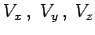
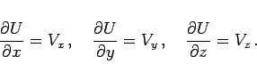
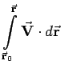
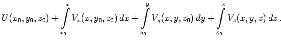

Inhalt Index DeskTop Bronstein

 Vektoranalysis und Feldtheorie Integration in Vektorfeldern Kurvenintegral und Potential im Vektorfeld Konservatives oder Potentialfeld
Vektoranalysis und Feldtheorie Integration in Vektorfeldern Kurvenintegral und Potential im Vektorfeld Konservatives oder Potentialfeld


Ist die Funktion  in kartesischen Koordinaten gegeben, , dann gilt für das vollständige Differential ihrer Potentialfunktion:
in kartesischen Koordinaten gegeben, , dann gilt für das vollständige Differential ihrer Potentialfunktion:
|  | (13.108a) |
Dabei müssen die Koeffizienten  der Integrabilitätsbedingung (13.105) genügen. Die Bestimmung von U erfolgt über das Gleichungssystem
|  | (13.108b) |
Praktischerweise berechnet man das Potential durch Integration über drei zu den Koordinatenachsen parallele, Anfangs- und Endpunkt der Integration miteinander verbindende Strecken (s. Abbildung):
| U | = |  | |
| = |  | (13.109) |